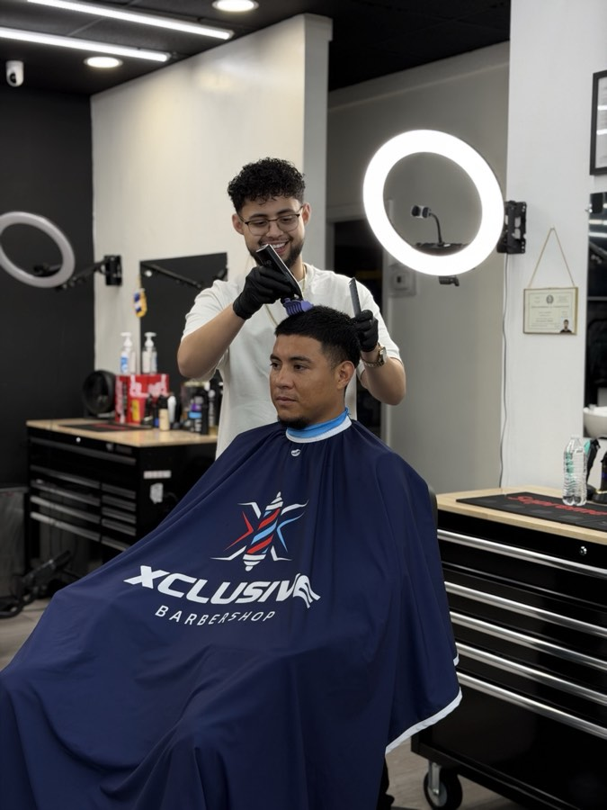

Grooming Tips
How to Maintain Your Fade Between Appointments

A fresh fade is one of the sharpest looks you can walk out of a barbershop with. But as the days go by, that clean line starts to blur, the neckline softens, and by week two you're already wondering when your next appointment is. The good news? A few simple habits can extend the life of your fade significantly.
1. Moisturize Your Scalp Daily
Dry scalp flakes and irritation make a fade look rough faster than anything. Use a lightweight, water-based moisturizer or a few drops of natural oil (jojoba, argan, or coconut) massaged into the scalp each morning. This keeps skin healthy and gives hair a natural sheen that makes the fade look cleaner longer.
2. Keep the Neckline Clean
The neckline is the first thing that grows out and the first thing people notice. If you want to stretch your cut a few extra days, ask your barber for a razor-sharp neckline at your appointment — it fades more gracefully than a tapered neck. Between visits, a simple edge-up with a trimmer can buy you another week.
3. Wash with the Right Products
Overwashing strips your scalp of natural oils and can make hair grow in looking coarse and unruly. Aim for 2–3 washes per week with a gentle, sulfate-free shampoo. Follow with a light conditioner on the hair — not the scalp — to keep strands manageable.
4. Use a Soft Brush Daily
A soft boar-bristle brush trains hair to lay down flat and distributes natural oils evenly. Spend 2–3 minutes brushing in the direction of the fade each morning. This keeps the hair looking shaped and intentional even as it grows.
5. Protect It at Night
Cotton pillowcases create friction that disrupts hair texture overnight. Switch to a satin or silk pillowcase, or wear a durag or wave cap if you want to maintain pattern and freshness while you sleep.
6. Book Consistently
The best way to maintain a great fade is to be consistent with your appointments. Most of our clients come in every 2–3 weeks. When you book on a regular schedule, your barber can build on the previous cut instead of starting from scratch — which means a sharper result every time.
Ready for a Fresh Cut?
Book your next appointment at Xclusive Barbershop and let us do the rest.
Book Now